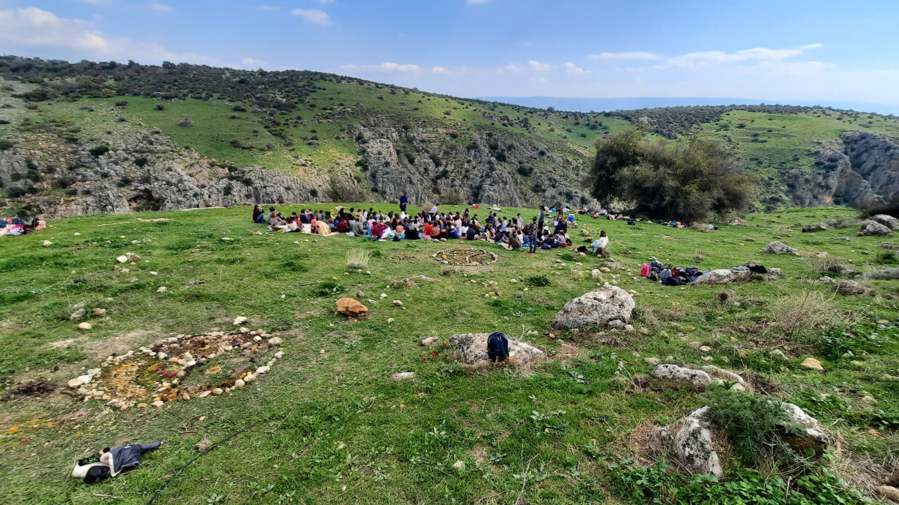
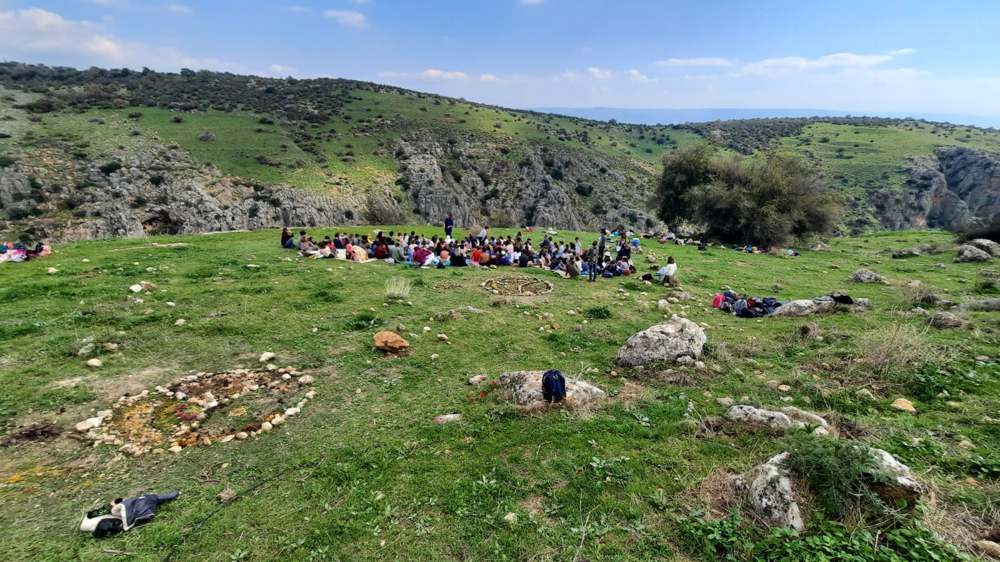

כל חינוך הוא חינוך עצמי, ואנו כמחנכים מהווים רק את סביבתו של הילד המחנך את עצמו. עלינו ליצור את הסביבה המתאימה כך שהילד יוכל לחנך את עצמו על ידינו, כפי שעליו לחנך את עצמו מתוך גורלו ויעודו הפנימיים
שטיינר, 20.4.1923


 

בית המעיין התחיל את דרכו בשנת 2006 כיוזמה של עמותת "מתיישבים עם הסביבה", בכדי להיות בית חינוך לילדים החל מגיל הגן ועד לסיום כיתה ח'. בשנת 2019 קיבל הכרה רשמית ממשרד החינוך כבית ספר ייחודי על אזורי במועצה אזורית עמק הירדן. בית המעיין הינו בית חינוך סביבתי ברוח וולדורף לצד חינוך יער ולימודים במרחבי הטבע הסובב אותנו.
בית המעיין התחיל את דרכו בשנת 2006 כיוזמה של עמותת "מתיישבים עם הסביבה", בכדי להיות בית חינוך לילדים החל מגיל הגן ועד לסיום כיתה ח'. בשנת 2019 קיבל הכרה רשמית ממשרד החינוך כבית ספר ייחודי על אזורי במועצה אזורית עמק הירדן. בית המעיין הינו בית חינוך סביבתי ברוח וולדורף לצד חינוך יער ולימודים במרחבי הטבע הסובב אותנו.
בית המעיין התחיל את דרכו בשנת 2006 כיוזמה של עמותת "מתיישבים עם הסביבה", בכדי להיות בית חינוך לילדים החל מגיל הגן ועד לסיום כיתה ח'. בשנת 2019 קיבל הכרה רשמית ממשרד החינוך כבית ספר ייחודי על אזורי במועצה אזורית עמק הירדן. בית המעיין הינו בית חינוך סביבתי ברוח וולדורף לצד חינוך יער ולימודים במרחבי הטבע הסובב אותנו.
"אמר האדם הפוקח עיניו: עושרו של עולם מה נפלא ומה רב- בוקר בוקר נלכד בלבי כברשת העולם ומלואו, המצולה היבשת, ואורות וצללים וחגים וחולין, ומילים וצלילים ושדות שיבולים וכל צבעי הקשת”
לאה גולדברג
bethamaayan@gmail.com
משרד: 04-6799807